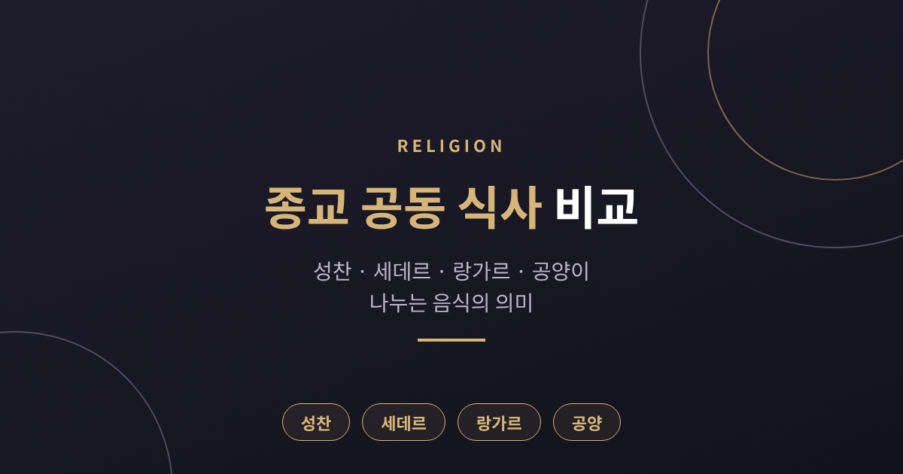
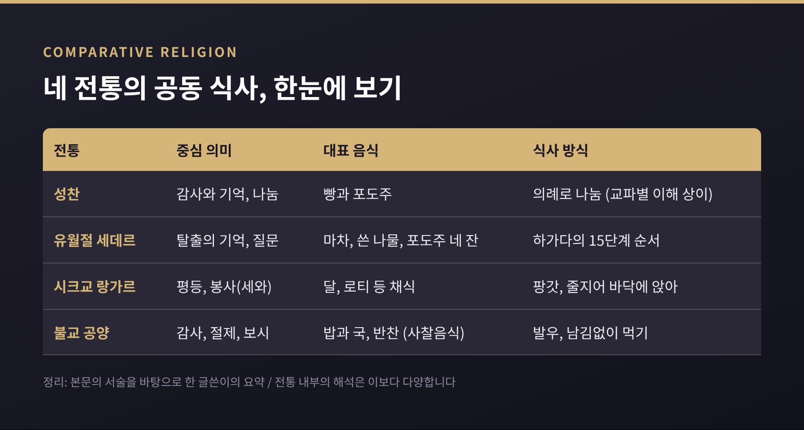
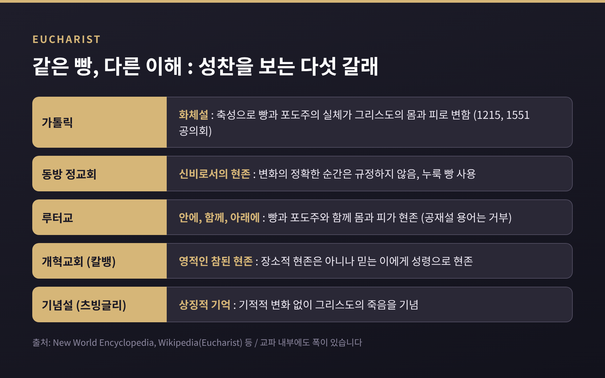
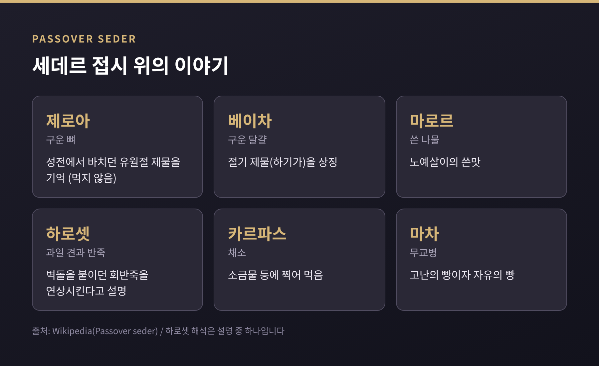
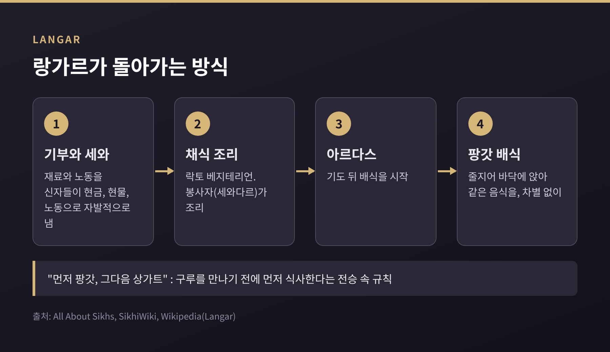
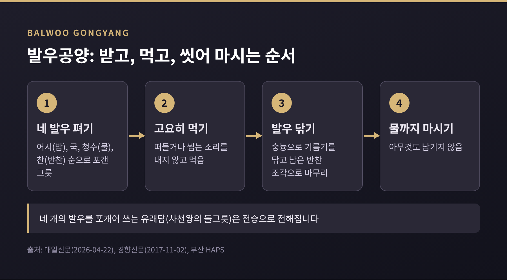

이번 글에서는 종교의 공동 식사를 비교종교학의 눈으로 정리해 보겠습니다. 기독교의 성찬, 유대교의 유월절 세데르, 시크교의 랑가르, 불교의 공양을 나란히 놓고 보겠습니다. 어느 신앙이 옳은지를 가리려는 글이 아니라, 같은 '밥상'이 전통마다 어떤 뜻을 얻게 되었는지 살펴보는 글입니다.
먼저 결론부터 말씀드리면 이렇습니다. 성찬과 세데르는 '기억'을, 랑가르는 '평등'을, 불교의 공양은 '감사와 절제'를 중심에 둡니다. 물론 한 가지 뜻으로만 읽히지는 않습니다. 아래에서 하나씩 보겠습니다.

성찬(Eucharist)은 최후의 만찬에서 비롯된 의례입니다. 마태·마가·누가복음과 바울의 고린도전서 11장에 관련 기록이 있고, 여기 담긴 "나를 기억하여 이것을 행하라"는 말이 이후 성찬 관행의 근거가 되었습니다. 고린도전서 11장 23~25절은 만찬에 관한 가장 이른 기록으로 꼽히며, 바울의 편지는 서기 50년대 초에 쓰인 것으로 추정됩니다.
용어에도 뜻이 담겨 있습니다. 유카리스트(Eucharist)는 그리스어로 '감사'를, 커뮤니언(Communion)은 라틴어로 '함께 나눔'을 뜻합니다. 같은 의례를 두고 감사에 무게를 두기도 하고, 나눔에 무게를 두기도 한 셈입니다.
초기 성찬은 지금처럼 빵 한 조각과 포도주 한 모금이 아니었습니다. 각자 형편껏 음식을 가져와 함께 먹는 실제 식사, 곧 아가페(애찬)인 경우가 많았습니다. 바울은 고린도전서 11장 20~22절에서 이 모임에서 벌어진 폐단을 꾸짖습니다. 성찬과 아가페는 1~3세기 사이에 갈라졌고, 교회는 6~8세기 사이에 아가페를 확정적으로 그만두었습니다. 예전엔 식탁이었고, 지금은 제단 앞의 의례가 된 것입니다.
한 가지 짚어 둘 점이 있습니다. 최후의 만찬이 유월절 식사였는지를 두고는 학자들 사이에서도 의견이 갈립니다. 공관복음은 유월절 식사로 그리지만, 요한복음은 연대기가 다릅니다. 이를 조화시키려는 여러 가설이 있을 뿐, 하나로 합의되지는 않았습니다.
성찬이 무엇이냐는 질문에는 교파마다 답이 다릅니다. 어느 쪽이 맞는지를 논하기보다, 어떤 입장이 있는지를 정리해 보겠습니다.

성공회처럼 한 교단 안에서도 폭이 넓은 경우가 있고, 퀘이커처럼 외적 성찬을 행하지 않는 공동체도 있습니다. 빈도도 제각각입니다. 매주 하는 교회가 있고 월 1회 하는 교회가 있으며, 칼뱅은 매주를 원했으나 제네바 의회는 월 1회만 받아들였습니다. 누구에게 열려 있는가도 다릅니다. 가톨릭은 일반적으로 닫힌 성찬을, 미국 ELCA는 세례받은 이에게 열린 성찬을 택합니다.
유대교의 세데르는 출애굽, 곧 이집트 탈출을 되새기는 식사입니다. 출애굽기 12장에 따르면 이스라엘 백성은 어린양의 피를 문설주에 바르고, 열 번째 재앙에서 구원받습니다. 그리고 그 밤 어린양을 구워 무교병(마차), 쓴 나물과 함께 먹도록 명받습니다.
'세데르'는 히브리어로 '순서'라는 뜻입니다. 하가다라는 책을 따라 15단계가 이어지고, 포도주 네 잔을 마십니다. 네 잔은 출애굽기 6장 6~7절의 네 가지 구원 약속에 대응합니다. 미슈나(페사힘 10:1)는 가장 가난한 사람에게도 네 잔을 요구합니다.

접시 위 음식은 모두 이야기를 담고 있습니다. 쓴 나물(마로르)은 노예살이의 쓴맛을, 과일과 견과를 으깬 하로셋은 벽돌을 붙이던 회반죽을 떠올리게 한다고 설명됩니다. 마차는 '고난의 빵'이면서 동시에 자유의 빵으로 읽힙니다. 토라는 서둘러 떠나느라 반죽이 부풀 시간이 없었기 때문이라고 설명하고, 일부 학자는 여행용 음식이었을 가능성을 말합니다.
여기서도 대비가 보입니다. 예전엔 어린양을 직접 잡아 먹었습니다. 로마가 두 번째 성전을 무너뜨린 뒤로는 제물을 바칠 수 없게 되어, 지금은 구운 정강이뼈(제로아)를 접시에 올려 두고 먹지는 않습니다. 식사의 형태는 바뀌었어도 '기억'이라는 중심은 이어진 것입니다.
세데르에는 '질문'이 들어 있다는 점도 눈여겨볼 만합니다. 가장 어린 사람이 "이 밤은 다른 밤과 무엇이 다른가"를 묻습니다. 하가다는 모든 세대가 자신이 직접 이집트에서 나온 것처럼 여겨야 한다고 말합니다. 먹는 일이 곧 이야기를 몸으로 전하는 방식이 되는 것입니다.
식사를 여는 말도 흥미롭습니다. 마기드 첫머리의 '하 라흐마 안야'는 마차를 들고 "이것은 조상들이 이집트 땅에서 먹은 고난의 빵"이라 선언한 뒤, 배고픈 이는 와서 먹으라고 초대합니다. 아브라바넬은 가난한 이가 들을 수 있도록 문을 열고 낭송해야 한다고 가르쳤다고 전해집니다. 기원 시기는 성전 파괴 이후라는 설부터 1~2세기까지 거슬러 올라간다는 설까지 엇갈립니다.
랑가르는 페르시아어에서 온 말로, 펀자브어에서 '부엌'을 뜻합니다. 시크교는 구루 나나크가 1500년경 이 무료 공동 부엌을 자선과 평등의 상징으로 삼았다고 전합니다. 종교, 카스트, 성별, 사회적 지위를 가리지 않고 누구나 먹을 수 있습니다.
핵심은 '팡갓'입니다. 사람들이 줄지어 바닥에 함께 앉아 같은 음식을 먹는 줄을 뜻합니다. 모임을 뜻하는 '상가트'와 짝을 이룹니다. 구루 아마르 다스는 방문객이 구루를 만나기 전에 먼저 랑가르에서 식사하도록 했다고 전해집니다. 악바르 황제가 이 규칙을 따라 줄에 앉았다는 일화가 유명하지만, 이는 시크 전승에 속하는 이야기로 역사적으로 확인된 것은 아닙니다.

운영 방식도 단순합니다. 음식은 락토 베지테리언, 곧 달걀과 고기를 쓰지 않는 채식으로 준비합니다. 재료와 노동은 신자들이 현금, 현물, 노동으로 자발적으로 냅니다. 조리와 배식은 '세와다르'라 불리는 봉사자들이 맡습니다. 여기서 채식은 신학적 선언이라기보다, 종교와 식습관이 다른 사람 누구나 같은 줄에 앉을 수 있게 하는 실용적 장치로 읽힙니다. 이 해석은 글쓴이의 정리임을 밝혀 둡니다.
규모는 한 소개 자료를 기준으로 했을 때 황금사원(하르만다르 사히브)에서 하루 약 4만~5만 명, 일요일과 축제일에는 10만 명을 넘는다고 합니다. 매일 달(dal)과 로티가 나옵니다.
다만 랑가르의 기원을 두고는 시각이 갈립니다. 시크 전승은 구루 나나크에게서 비롯되었다고 보지만, 일부 학자는 힌두 사원의 다르마샬라, 불교 수도원, 수피의 공동 부엌 같은 선례를 짚습니다. 한편 특정 공동체가 조리된 무료 식사를 지속적으로 제도화한 증거는 시크 랑가르 이전에는 없다는 서술도 함께 전해집니다. 어느 쪽이든 '평등하게 함께 먹는다'는 이상이 이 제도의 중심에 있다는 점은 분명해 보입니다.
불교에서 음식은 '주고받는 관계'로 먼저 나타납니다. 탁발(핀다파타)은 '음식 한 덩이가 발우에 떨어진다'는 뜻입니다. 스님은 구걸하는 것이 아니라 공양받은 음식을 모으는 것이고, 시주자에게는 공덕을 쌓을 기회가 됩니다.
방식에 규칙이 많습니다. 스님은 말없이 서서 기다리고, 아무것도 받지 못할 수도 있습니다. 시선은 발우에 두고 주는 사람을 보지 않으며, 좋고 나쁨을 가리지 않고 받습니다. 감사 인사를 하지 않는다는 점도 특이합니다. 베푸는 행위 자체가 시주자의 기회이기 때문이고, 오히려 시주자가 고마워하는 경우가 많다고 합니다. 하나의 발우에 모든 음식이 담기는 모습은 모든 시주자를 평등하게 받는 상징으로 설명됩니다.
다만 이 탁발이 모든 불교권에서 이어지는 것은 아닙니다. 중국, 한국, 일본에서는 대체로 사라졌고, 일본은 주 또는 월 단위의 탁발로 바뀌었습니다.
그렇다면 한국 사찰의 공동 식사는 어떨까요. 발우공양입니다.

발우는 네 개를 포개어 씁니다. 어시발우에는 밥, 국발우에는 국, 청수발우에는 물, 찬발우에는 반찬을 담습니다. 부처가 깨달음 뒤 첫 공양에서 사천왕이 올린 돌그릇을 포개어 썼다는 유래담이 전해집니다. 전승이라는 점은 알아 두셔야 합니다.
식사 중에는 떠들거나 씹는 소리를 내지 않습니다. 마지막에는 숭늉이나 청수로 그릇을 닦고, 그 물까지 마십니다. 그릇에 아무것도 남기지 않는 것이 원칙입니다. 그릇을 씻은 물이 맑게 남는다는 실용적 이점도 있고, 음식을 준 모든 존재에게 감사하며 절제하는 수행이라는 설명도 있습니다. 재료를 고르고 조리하고 먹고 설거지하는 전 과정을 마음 닦는 수행으로 보는 시각입니다. 사찰 음식이 동물성 재료와 오신채(마늘, 파, 달래, 부추, 흥거)를 쓰지 않는 것도 같은 맥락입니다. 경전에서는 익혀 먹으면 음욕을, 날로 먹으면 분노를 일으킨다고 설명합니다.
정리하면 이렇습니다. 네 전통은 모두 '무엇을 먹느냐'보다 '어떻게, 누구와, 어떤 뜻으로 먹느냐'를 정해 두었습니다.
기억의 밥상은 성찬과 세데르입니다. 한쪽은 한 번의 만찬을, 다른 쪽은 한 번의 탈출을 먹으면서 되새깁니다. 평등의 밥상은 랑가르입니다. 같은 줄에 앉는다는 사실이 곧 가르침입니다. 절제의 밥상은 공양입니다. 주고받는 마음과 남기지 않는 태도가 곧 수행입니다.
물론 이 구분은 한 가지 읽기일 뿐입니다. 세데르에도 가난한 이를 초대하는 평등의 결이 있고, 성찬의 어원에는 감사와 나눔이 함께 들어 있습니다. 또 이 글에서 다룬 서술은 전통 안팎의 자료를 종합한 것이어서, 각 공동체의 실제 신앙 경험을 다 담았다고 말씀드리기는 어렵습니다.
끝으로 한 마디만 덧붙이겠습니다. 이 의례들은 서로 다른 신앙에서 나왔으면서도, 밥을 나누는 일이 사람 사이의 경계를 정하기도 하고 허물기도 한다는 점을 보여 줍니다. 누구와 같은 식탁에 앉는가라는 물음에 답하는 방식이 곧 그 공동체의 얼굴인 셈입니다.
"무엇을 먹었는가보다, 누구와 어떤 마음으로 먹었는가."
다음에 누군가와 밥을 나눌 때, 그 식탁이 무엇을 기억하고 있는지 한 번쯤 생각해 보시길 권합니다.